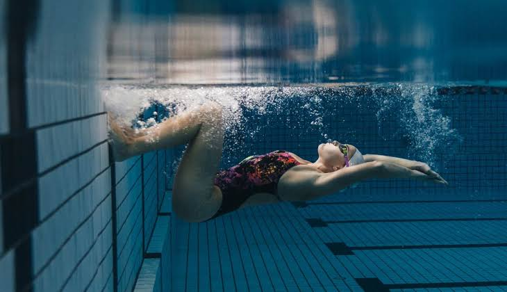
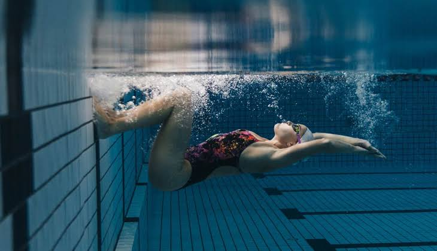

Deportes
Mi deporte favorito es la natación, lo he practicado desde pequeña pero estos últimos años debido a la pandemia dejé de hacerlo. También practiqué Voley pero no me llamó tanto la atención.
Mi nombre es Kimberly Astrid Atto Zamudio, tengo 16 años.
Nací el 14 de julio del 2004, en Perú, Lima.
Vivo en San borja junto a mi familia la cual está conformada por mi mamá, mis tíos, mis abuelos y mis hermanos.
Tengo una hermana mayor y dos menores. Durante un año viví con mi padre en cercado de Lima.
Estudié primero de secundaria en el colegio Saint Patrick, el resto de mi secundaria la hice en Trilce
Actualmente, estoy estudiando la carrera de Ingeniera de Sistemas en la Universidad San Ignacio de Loyola
Mi deporte favorito es la natación, lo he practicado desde pequeña pero estos últimos años debido a la pandemia dejé de hacerlo. También practiqué Voley pero no me llamó tanto la atención.
